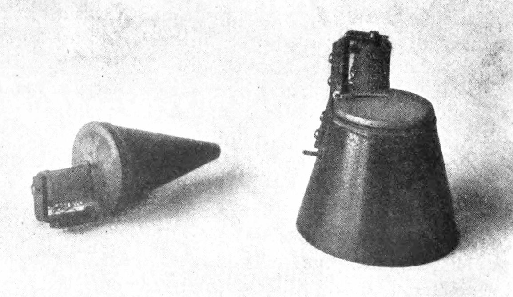

Cet essai a d’abord paru en turc. La version française est de ma main.


He must adjust himself to the patient as a telephone receiver is adjusted to the transmitting microphone.
Sigmund Freud, « Conseils aux médecins sur le traitement analytique » (1912), trad. anglaise J. Strachey
I
L’un des moments fondateurs de la psychanalyse est une correspondance. Entre 1887 et 1904, Freud écrivit des centaines de lettres à Wilhelm Fliess, oto-rhino-laryngologiste à Berlin. Il y partageait ses idées scientifiques, ses observations cliniques, ses doutes, jusqu’à ses propres rêves et souvenirs d’enfance. L’auto-analyse qu’il entreprit dans la seconde moitié des années 1890, après la mort de son père, se déroula pour une large part dans cette correspondance : dans une lettre du 15 octobre 1897, il écrit avoir découvert dans sa propre enfance des sentiments d’amour pour sa mère et de jalousie envers son père, et que ces sentiments répondent à une structure universelle, à l’Œdipe de Sophocle.1 Le premier « analyste » de la psychanalyse fut en un sens un correspondant vivant dans une autre ville, sur le divan duquel Freud ne s’allongea jamais.
Freud continua d’ailleurs toute sa vie à écouter et à répondre par lettre. L’un des exemples les plus connus est une courte lettre écrite en 1935 à une mère américaine. Celle-ci lui avait écrit pour décrire l’homosexualité de son fils et demander de l’aide ; elle ne parvenait pas même à nommer ce dont elle parlait. La réponse de Freud, rédigée en anglais, est d’une franchise remarquable pour l’époque : « Homosexuality is assuredly no advantage, but it is nothing to be ashamed of, no vice, no degradation; it cannot be classified as an illness » ; l’homosexualité n’est assurément pas un avantage, mais il n’y a pas lieu d’en avoir honte, ce n’est ni un vice ni une dégradation, et on ne saurait la classer parmi les maladies. Il lui rappelle que bien des personnes hautement respectées, depuis l’Antiquité, ont été homosexuelles, et ajoute que l’analyse pourrait apporter à son fils harmonie, paix de l’esprit et pleine efficience, qu’il reste homosexuel ou non.2 Cette lettre n’est pas une analyse ; mais elle montre bien comment des mots écrits de loin à quelqu’un que l’on n’a jamais vu peuvent changer le regard qu’une personne porte sur son propre enfant.
La première analyse d’enfant fut elle aussi menée par un intermédiaire. Dans le cas du petit Hans, publié en 1909, la phobie des chevaux qu’avait développée un garçon de cinq ans fut analysée par son père sous la supervision de Freud ; Freud ne vit l’enfant qu’une seule fois et suivit l’analyse à travers les notes et les lettres détaillées que le père lui envoyait régulièrement.3 Une analyse pouvait donc se poursuivre en lisant, de la main d’un père, les mots d’un enfant que l’analyste avait à peine vu. Ces deux exemples montrent que la psychanalyse, connue comme une discipline fondée sur la proximité physique que symbolisent le divan et la pièce partagée, a éprouvé dès l’origine les possibilités de la parole à distance.
Une autre scène précoce montrant que l’analyse n’est pas liée à une pièce est l’expérience que l’on compte comme la première analyse didactique. En 1907, Max Eitingon, jeune médecin travaillant à la clinique du Burghölzli à Zurich, vint à Vienne et, pendant quelques semaines, fit avec Freud de longues promenades du soir dans les rues de la ville. Au cours de ces promenades, Eitingon parlait de sa vie, de ses rêves, de ses angoisses ; Freud écoutait et interprétait.4 Il n’y avait ni divan, ni pièce à la porte fermée, ni salle d’attente, pas même une heure fixe ; mais il y avait une parole, quelqu’un pour l’écouter, et une rencontre répétée. Lorsque, treize ans plus tard, Eitingon fonda à Berlin le premier institut psychanalytique liant la formation des analystes à une structure d’analyse personnelle, de supervision et d’enseignement théorique, il n’avait sûrement pas oublié que sa propre formation avait commencé sur un trottoir.
II
Plus frappant encore : pour décrire la manière d’écouter de l’analyste, Freud se tourna vers la technologie de communication la plus récente de son temps. Dans ses conseils techniques aux médecins de 1912, Freud demande à l’analyste une « attention également flottante », qui ne se fixe sur rien en particulier et reste également ouverte à tout ce qui se dit, et décrit cette attitude par l’analogie que j’ai prise en épigraphe : l’analyste doit tourner son propre inconscient, comme un organe récepteur, vers l’inconscient émetteur du patient, et se régler sur lui comme le récepteur du téléphone est réglé sur le microphone qui transmet.5 Le téléphone retransforme en ondes sonores des vibrations électriques ; l’analyste doit de même retransformer en pensées inconscientes les vibrations venues de l’inconscient de l’analysant et cachées dans sa parole.
Cette analogie n’est pas un simple ornement. Dès le début, la psychanalyse a pensé sa propre pratique de l’écoute dans la langue d’une technologie de communication, parce qu’elle a affaire au fond à une voix qui parvient à un autre, à l’écart entre ce qui est émis et ce qui est reçu, aux parasites, aux pertes et aux malentendus. La place centrale que Lacan donnera plus tard au langage et au signifiant approfondit cette intuition : ce qui compte dans l’analyse est moins la proximité physique des corps que le fait qu’une parole soit adressée à un autre, et que cet autre puisse l’entendre depuis un lieu que celui qui parle ignore.
Le dispositif analytique classique est d’ailleurs lui-même, plus qu’on ne le pense, un dispositif de la distance. Le célèbre divan du cabinet de Freud aurait été offert vers 1890 par une patiente reconnaissante. L’analysant est allongé sur le divan ; l’analyste est assis à sa tête, dans un fauteuil que l’analysant ne voit pas. Freud a écrit ouvertement la raison de ce dispositif en 1913 : il ne supportait pas d’être regardé fixement par d’autres huit heures par jour, voire davantage.6 Ce qui commença comme une gêne personnelle devint bientôt un principe technique : soustraire le visage de l’analyste au regard laissait l’analysant à sa propre parole, sans qu’il cherche à lire les réactions de l’analyste. Le divan est une distance délibérément placée entre deux personnes se trouvant dans la même pièce. L’analysant sent la présence de l’analyste, entend sa voix, mais ne voit pas son visage.


Se souvenir de ce dispositif jette une lumière inattendue sur le débat autour des séances en ligne. Le reproche le plus souvent adressé aux séances en ligne est que le visage y est enfermé dans un écran et que le corps disparaît ; or l’analyse classique repose elle-même sur un dispositif qui soustrait délibérément le visage au regard. C’est pourquoi une séance menée à la seule voix, caméra éteinte, aussi étrange que cela paraisse d’abord, se rapproche étonnamment de la fonction du divan. Une séance où la caméra est allumée et où deux visages se rencontrent à l’écran ressemble en revanche davantage au dispositif de la psychothérapie en face à face qu’au divan. Le choix du dispositif est, avant d’être une préférence technique, une question clinique : celle de trouver le lieu d’où l’analysant peut parler.
La pièce de l’analyste fait elle aussi partie du cadre, et les analysants l’observent souvent de près. Dans le livre où elle raconta des années plus tard son analyse avec Freud à Vienne en 1933 et 1934, la poétesse américaine Hilda Doolittle, qui signait H.D., décrit longuement les statuettes antiques, figures égyptiennes, grecques et romaines, qui remplissaient le bureau de Freud. Un jour, Freud prend sur son bureau une petite Athéna de bronze, la lui tend, et dit que c’est sa préférée, qu’elle est parfaite, seulement elle a perdu sa lance.7 H.D. médita cette phrase pendant des années, avec tous les thèmes de son analyse : la féminité, le manque, la création. Dans une séance en ligne aussi, l’analysant voit quelque chose : une bibliothèque derrière l’analyste, un mur, un tableau, une lumière qui change. Ces détails peuvent eux aussi entrer dans le matériel de l’analyse. L’analysant cesse d’être celui qui regarde la pièce de l’analyste et devient celui qui voit, du monde de l’analyste, la largeur d’un rectangle ; et ce qu’il voit dans ce rectangle, ce qu’il s’y demande, ce qu’il y néglige, dit quelque chose de lui.
Il faut aussi poser d’emblée une limite. Le travail psychanalytique est un travail de parole ; il n’est donc pas la même chose que les formes de « thérapie » menées par messages écrits ou par applications de messagerie. Les lettres de Freud à Fliess furent le matériau d’une auto-analyse, mais non une analyse. L’écriture a un autre temps que la parole : qui écrit peut repenser une phrase, l’effacer, la corriger, décider de l’envoyer ou non. Dans la parole, au contraire, les mots échappent un instant au contrôle de celui qui parle ; un lapsus, une hésitation, une phrase laissée en suspens, un mot inattendu sont des moments où l’inconscient se montre. La correction automatique des téléphones d’aujourd’hui est à cet égard un outil ironique : elle corrige et efface les lapsus de la langue écrite, ces petites traces de l’inconscient, avant même que nous les ayons remarqués. Que les séances psychanalytiques en ligne se tiennent par la voix ou par la vidéo n’est donc pas une préférence, mais une nécessité.
III
Le vrai nœud des débats sur les séances en ligne est ce que les psychanalystes appellent « le cadre ». Dans un article publié en 1967, devenu depuis un classique, le psychanalyste argentin José Bleger soutenait que le processus analytique se déroule à l’intérieur d’un cadre fait d’éléments constants, l’heure, le lieu et la fréquence des séances, les honoraires, l’attitude de l’analyste, et que ce cadre est un fond silencieux que l’on ne remarque que lorsqu’il se rompt.8 Pour Bleger, le cadre est le lieu où se déposent silencieusement les angoisses les plus primitives, les moins différenciées, de l’analysant ; c’est pourquoi la constance du cadre importe autant que le travail analytique lui-même. Le concept d’« environnement de holding » chez Donald Winnicott porte une intuition semblable : de même que le nourrisson a besoin, pour se développer, de la présence fiable et prévisible d’une mère, le processus analytique a besoin d’un cadre fiable.
Vu sous cet angle, le vrai problème des séances en ligne n’est pas l’écran lui-même, mais la manière dont le cadre est établi. Dans une séance tenue dans la même pièce, le lieu fournit de lui-même une partie du cadre : la salle d’attente, la porte fermée, le mobilier immuable de la pièce de l’analyste, le temps du trajet. Dans une séance en ligne, bon nombre de ces éléments doivent être établis délibérément. D’où l’analysant parlera, comment la confidentialité sera assurée, le temps de transition laissé au début et à la fin de la séance, ce qu’il faut faire quand la connexion tombe : tout cela doit être discuté dès les premiers entretiens. Lorsque le cadre est bien établi, l’écran cesse d’être ce qui le perturbe et devient une condition ordinaire de la séance.
Les petits rituels d’une séance tenue dans la même pièce font souvent, sans qu’on s’en aperçoive, un travail important. L’analysant quitte son domicile ou son travail, se met en route, entre dans l’immeuble, sonne, s’assied dans la salle d’attente ; pendant ce temps, il se défait lentement de l’agitation de la journée, pense à ce qu’il va dire ou tâche de ne pas y penser. Après la séance, il refait le même chemin, et l’écho de ce qu’il a dit l’accompagne encore un moment. Dans le cabinet viennois de Freud, les patients passaient de la salle d’attente au bureau par une double porte ; cette double porte, tout en empêchant ce qui se disait de s’entendre au-dehors, faisait aussi sentir au corps qu’un seuil était franchi. Dans une séance en ligne, ce seuil se réduit à un lien, à un clic. Quelqu’un qui était en réunion de travail une minute plus tôt peut se retrouver une minute plus tard devant son analyste ; et dès la fin de la séance, le voilà de retour dans la cuisine, avec ses enfants, avec ses notifications. Pendant les années de pandémie, bien des analystes ont rapporté que des analysants rejoignaient leurs séances depuis une voiture garée, un cellier, une salle de bains, un balcon, et que trouver chez soi un coin où parler était en soi une tâche. C’est pourquoi établir délibérément le seuil dans les séances en ligne, être seul quelques minutes avant la séance et ne pas passer aussitôt à autre chose après, est une partie du cadre aussi importante que l’heure et les honoraires.
Il est utile de rappeler ici une phrase de Lacan sur le transfert. Dans son séminaire de 1964, Lacan dit que la présence de l’analyste est elle-même une manifestation de l’inconscient.9 La présence dont il s’agit n’est pas simplement celle d’un corps dans la même pièce. La présence de l’analyste est celle du lieu vers lequel se dirige la parole de l’analysant, du sentiment de parler à quelqu’un supposé savoir quelque chose, d’une écoute. Cette présence peut se perdre dans une pièce, par exemple si l’analyste est distrait, fatigué, perdu dans ses propres pensées ; et elle peut s’établir aux deux bouts d’un écran. La présence de l’analyste ne se mesure pas à la proximité, mais à la qualité de l’écoute.
IV
Dans la tradition psychanalytique, la présence des corps dans la même pièce a longtemps été considérée comme un élément indispensable du travail, et ce point de vue a ses raisons. Observer le corps de l’analysant, ses silences, sa respiration, sa manière d’entrer dans la pièce et d’en sortir, offre un savoir que la parole seule ne peut transporter. Les séances en ligne perdent une part de ce savoir, et la question est encore débattue dans les milieux psychanalytiques ; ce débat mérite d’être pris au sérieux.
D’un point de vue lacanien, pourtant, ce qui est préservé est aussi décisif que ce qui est perdu. La voix et le regard, que Lacan comptait parmi les objets du désir, ne disparaissent pas dans les séances en ligne ; ils apparaissent seulement sous une autre forme. Une voix qui passe par des écouteurs peut être entendue bien plus proche qu’une voix dans la même pièce, presque comme si elle venait du dedans. Le regard est à la fois intensifié et médiatisé par l’écran ; tout en voyant le visage de l’autre, on peut être contraint de regarder en même temps son propre visage dans une petite fenêtre, ce qui peut créer un malaise singulier. Certains analysants préfèrent éteindre la caméra et ne parler qu’à la voix, et cela peut, un peu comme la fonction du divan, rendre possible une parole plus libre en s’éloignant du regard. Un article publié en 2021 par Jeremy Bailenson, de l’université Stanford, range précisément ce point parmi les causes de la « fatigue de la visioconférence » répandue pendant la pandémie : regarder sans cesse son propre visage à l’écran, situation que nous ne rencontrons jamais dans la vie quotidienne, revient à être assis en permanence devant un miroir et accentue l’autocritique ; et voir continûment le visage de l’autre, à une distance qui n’est admise dans la conversation ordinaire que dans les relations très proches, crée aussi une tension dans le corps.10 Masquer sa propre image est donc, dans les séances en ligne, un réglage modeste mais important. Des détails techniques comme les petits retards de la connexion, le fait de parler en même temps, ou de ne pas savoir si un silence est une coupure ou une pause, sont aussi un matériel nouveau à prendre en compte dans le travail analytique.
La place de la voix dans le travail analytique fait l’objet d’une réflexion particulière dans la théorie de Lacan. Dans son séminaire sur l’angoisse de 1962–1963, Lacan traite la voix, avec le regard, comme l’un des objets du désir qu’il ajoute au sein et aux fèces comptés par Freud. Pour décrire ce statut d’objet de la voix, il se tourne vers une étude publiée en 1919 par l’élève de Freud Theodor Reik sur le shofar, la corne de bélier que l’on sonne lors des jours saints dans la tradition juive. Le son du shofar ne porte aucun mot et ne transmet aucun sens ; il ébranle pourtant au plus profond tous ceux qui l’entendent, et il est entendu comme s’il était la voix même d’une loi, d’une alliance, d’un appel.11 Pour Lacan, la voix est un objet distinct des mots prononcés, leur support, qui lui-même ne dit rien. L’écoute analytique ne prête pas attention au seul sens de ce qui est dit, mais à la voix elle-même, à son ton, à ses brisures, à ses hésitations, à l’accent qui tombe sur un mot. Dans une séance où l’écran efface une partie du visage et rend la plus grande part du corps invisible, la voix devient donc plus saillante encore. Une voix qui entre droit dans l’oreille par des écouteurs diffère de celle qui se répand dans l’air d’une pièce : plus proche, plus intime, parfois presque comme si elle venait de l’intérieur de sa propre tête.
V
Le travail analytique à distance a été débattu avant même l’ère d’internet. Dans la seconde moitié du vingtième siècle, les analyses poursuivies par téléphone, lorsque l’analyste déménageait ou que l’analysant partait pour une autre ville ou un autre pays, furent discutées de temps à autre dans la littérature psychanalytique. Avec la diffusion des technologies vidéo, le débat s’est élargi ; l’article publié en 1998 par la psychanalyste américaine Sharon Zalusky, dont le titre résume le débat, « Telephone analysis: out of sight, but not out of mind », en fut l’un des tournants. S’appuyant sur sa propre expérience clinique, Zalusky montrait que, dans les analyses poursuivies par téléphone, le transfert, la résistance et le matériel inconscient ne disparaissent pas, mais apparaissent seulement sous d’autres formes.12 Des publications comme Psychoanalysis Online, dirigé par Jill Savege Scharff, ont rassemblé l’expérience et les discussions théoriques d’analystes de différents pays.13 La pandémie de 2020 a fait sortir le débat du cadre académique : partout dans le monde, analystes et analysants ont dû travailler pendant des mois par le seul écran et le seul téléphone, et cette expérience a rendu visibles les possibilités du travail à distance autant que ses limites.
Le nombre d’études sur l’efficacité de la thérapie par vidéo a nettement augmenté au cours de la dernière décennie. Les méta-analyses qui rassemblent ces études montrent que les thérapies menées par vidéo donnent, pour des difficultés courantes comme la dépression et l’anxiété, des résultats globalement équivalents à ceux de la thérapie en face à face ; la méta-analyse publiée en 2021 par Ashley Batastini et ses collègues est l’une des études les plus complètes du domaine.14 Un autre résultat important de ces recherches est que l’alliance thérapeutique, la relation de travail entre patient et thérapeute, peut s’établir solidement dans les séances vidéo aussi. L’honnêteté impose ici une réserve : la plupart de ces études portent sur des thérapies brèves et structurées ; les recherches systématiques sur le travail psychanalytique au long cours mené en ligne restent encore limitées.
VI
Au-delà de la distance, les séances en ligne ont aussi des possibilités propres. On peut atteindre un praticien travaillant dans l’orientation que l’on cherche, quelle que soit la ville où l’on vit ; cela compte particulièrement pour des orientations qui, comme la psychanalyse lacanienne, ne se trouvent pas dans toutes les villes. Un déménagement, un voyage ou une période chargée au travail n’interrompent pas nécessairement les séances, et, vu la place de la continuité dans le travail analytique, ce n’est pas un mince avantage. La suppression du temps de trajet rend plus facile l’inscription de séances régulières dans la vie quotidienne. Et, peut-être surtout, on gagne la possibilité de travailler avec un analyste auprès de qui l’on peut dire ses sentiments dans sa propre langue, avec ses propres mots ; la place de la langue maternelle dans la mise en mots des expériences les plus intimes fait partie des savoirs les plus anciens de la psychanalyse.
L’un des témoins cliniques les plus nets de ce savoir est un court article publié en 1950 par le psychanalyste américain Ralph Greenson. Menant en anglais l’analyse d’une patiente née et élevée dans un pays germanophone puis émigrée en Amérique, Greenson remarqua qu’elle ne parvenait pas à atteindre certains souvenirs et sentiments de son enfance. Lorsqu’à un moment ils firent passer l’analyse à l’allemand, des souvenirs jusque-là indicibles, des hontes et des peurs liées à la relation avec sa mère, surgirent soudain. En anglais, la patiente se vivait comme une femme adulte, polie et mesurée ; en allemand, elle devenait une petite enfant effrayée, que l’on avait fait se sentir sale.15 La langue maternelle n’est pas seulement un moyen de communication, mais la langue des premières amours, des premières peurs, des premiers interdits d’un sujet. Là où quelqu’un ne trouve pas, dans la ville où il vit, un analyste travaillant dans sa langue maternelle, par exemple lorsqu’il vit à l’étranger, les séances en ligne peuvent être aussi une manière de s’ouvrir à nouveau à cette langue.
La fécondité des séances en ligne dépend largement du soin avec lequel le cadre est établi. Choisir une pièce dont la porte ferme, où personne ne peut vous entendre pendant toute la séance, utiliser des écouteurs, vérifier à l’avance la connexion internet et la batterie de l’appareil, couper les notifications et ne rien faire d’autre en même temps : telles sont les pierres angulaires de ce cadre. Si la confidentialité ne peut être assurée à la maison, une voiture garée est une solution fréquemment employée. Laisser quelques minutes de transition avant et après la séance importe aussi : dans les séances tenues dans la même pièce, le temps du trajet fait ce travail de lui-même ; dans les séances en ligne, la transition doit être établie délibérément. Les autres éléments du cadre doivent être discutés tout aussi ouvertement : le jour et l’heure des séances, les honoraires et leur mode de règlement, la manière dont seront traitées les séances annulées ou manquées. À première vue, ces détails semblent des arrangements pratiques ; mais dans le travail analytique, chacun d’eux devient une part de la relation de l’analysant au cadre, et donc à l’analyste. Annuler toujours une séance à la dernière minute, voir la connexion tomber toujours ce jour-là, la caméra se figer juste au moment où quelque chose d’important allait se dire, sont des événements qui entrent dans le matériel de l’analyse et dont on peut parler. Les séances ne sont pas enregistrées, et les informations partagées sont protégées dans le cadre de la loi turque n° 6698 sur la protection des données personnelles.
Si les séances en ligne sont une option adaptée pour beaucoup, il est des situations où un accompagnement en présence peut être un meilleur point de départ. Dans les crises aiguës où existe un risque de se faire du mal ou d’en faire à autrui, il faut appeler sans attendre le numéro d’urgence (le 112 dans l’Union européenne et en Turquie ; en France, le 3114 pour la prévention du suicide) ou se rendre au service de santé le plus proche. Lorsqu’il n’existe pas à la maison d’espace sûr et confidentiel pour parler, par exemple dans des relations marquées par la violence ou la contrainte, les séances en ligne peuvent ne pas être sûres. Dans les états graves qui exigent un suivi psychiatrique rapproché, le travail en ligne ne peut être envisagé qu’en lien avec un accompagnement psychiatrique.
VII
Rien de cela ne signifie qu’une séance en ligne soit en tout point identique à une séance tenue dans la même pièce. Quelque chose se perd : l’entrée du corps dans la pièce, le sens d’une poignée de main ou de son absence, le silence qui se répand entre deux personnes respirant le même air, le bruit de la porte qui se ferme après la séance. Quelque chose aussi se gagne : la possibilité d’atteindre un analyste avec qui l’on peut parler dans sa propre langue, la préservation de la continuité, pour certains analysants une parole libérée du poids du regard. La tâche du clinicien est de peser ces pertes et ces gains pour chaque analysant séparément, et de tenir les séances en ligne ni pour un idéal ni pour un pis-aller, mais pour une manière de travailler qui a ses conditions et ses limites propres. Certaines analyses commencent en ligne et se poursuivent ainsi ; certaines commencent dans la même pièce et passent à l’écran à l’occasion d’un déménagement ; certaines, après une période à l’écran, ont besoin de revenir à la pièce. Chacun de ces passages peut être parlé dans l’analyse elle-même.
Le chemin qui mène des lettres de Freud à Fliess aux écrans d’aujourd’hui montre que le rapport de la psychanalyse à la distance est bien plus ancien et bien plus fécond qu’on ne le pense souvent. La femme de Vermeer qui lit une lettre vit dans les mots de quelqu’un qu’elle ne voit pas ; le téléphone de Freud relie deux inconscients le long d’une ligne. Ce qui a été décisif en psychanalyse n’a jamais été la distance physique ; c’est l’existence d’un lieu où une parole peut être adressée à un autre, où cet autre peut l’entendre depuis un lieu que celui qui parle ignore, et où cette rencontre peut se répéter dans un cadre stable et fiable. Ce lieu peut s’établir dans une pièce, ou aux deux bouts d’un écran. Ce qui compte n’est pas que deux personnes soient assises au même endroit, mais qu’un lieu où l’un peut parler et l’autre entendre puisse être établi à nouveau, semaine après semaine, à la même heure, avec le même soin.
Notes
- J. M. Masson (dir.), The Complete Letters of Sigmund Freud to Wilhelm Fliess, 1887–1904 (1985), lettre du 15 octobre 1897 ; en français : S. Freud, Lettres à Wilhelm Fliess, 1887–1904, Paris, PUF, 2006. ↩︎
- La lettre de Freud du 9 avril 1935 fut publiée à la demande de sa destinataire dans l’American Journal of Psychiatry en 1951. Elle compte aujourd’hui parmi les textes les plus cités de Freud et demeure, dans l’histoire de la psychanalyse, un témoignage précoce contre la pathologisation de l’homosexualité. Je traduis. ↩︎
- S. Freud, « Analyse de la phobie d’un garçon de cinq ans (le petit Hans) » (1909), in Cinq psychanalyses. Les textes de Freud sont cités sous leurs titres français usuels, avec l’année de première publication. ↩︎
- Les promenades d’Eitingon avec Freud sont rapportées comme la première analyse didactique dans le deuxième volume de la biographie d’Ernest Jones, La Vie et l’œuvre de Sigmund Freud (1955). Eitingon fondera en 1920 la Polyclinique psychanalytique de Berlin et sera l’un des pionniers de l’analyse personnelle obligatoire dans la formation des analystes. ↩︎
- S. Freud, « Conseils aux médecins sur le traitement analytique » (1912), in La Technique psychanalytique. ↩︎
- S. Freud, « Le début du traitement » (1913), in La Technique psychanalytique. À cette raison personnelle, Freud en ajoute au même endroit une raison technique : les expressions du visage de l’analyste ne doivent pas fournir au patient matière à interprétation ni influencer ses associations. ↩︎
- H.D., Tribute to Freud, New York, Pantheon, 1956 ; en français : Visage de Freud, Paris, Denoël, 1977. Le livre de H.D. est l’un des témoignages les plus riches d’une analyse avec Freud racontée de l’intérieur ; il montre en détail comment les objets de la pièce de Freud devinrent des sources d’association au cours de l’analyse. ↩︎
- J. Bleger, « Psycho-analysis of the psycho-analytic frame », International Journal of Psycho-Analysis 48 (1967) ; l’original espagnol figure dans Simbiosis y ambigüedad (1967). ↩︎
- J. Lacan, Le Séminaire, livre XI : Les quatre concepts fondamentaux de la psychanalyse (1964), Paris, Seuil, 1973. Lacan traite la présence de l’analyste comme un élément à inclure dans le concept de transfert ; cette présence se définit moins par le fait que le corps de l’analyste soit physiquement là que comme le lieu auquel s’adresse la parole de l’analysant et où l’inconscient s’ouvre et se referme. ↩︎
- J. N. Bailenson, « Nonverbal overload: A theoretical argument for the causes of Zoom fatigue », Technology, Mind, and Behavior 2/1 (2021). Parmi les suggestions de Bailenson figurent le masquage de sa propre image et la réduction de la taille de l’image. ↩︎
- T. Reik, « Das Schofar », in Das Ritual. Psychoanalytische Studien, Leipzig et Vienne, Internationaler Psychoanalytischer Verlag, 1919. Lacan discute longuement l’étude de Reik dans les dernières leçons du Séminaire, livre X : L’angoisse (1962–1963 ; Paris, Seuil, 2004). ↩︎
- S. Zalusky, « Telephone analysis: Out of sight, but not out of mind », Journal of the American Psychoanalytic Association 46/4 (1998). Zalusky note aussi que pour certains analysants le téléphone apportait, à l’égard du regard de l’analyste, une liberté semblable à celle que procure le divan. ↩︎
- J. S. Scharff (dir.), Psychoanalysis Online: Mental Health, Teletherapy, and Training (2013). ↩︎
- A. B. Batastini, P. Paprzycki, A. C. T. Jones et N. MacLean, « Are videoconferenced mental and behavioral health services just as good as in-person? A meta-analysis of a fast-growing practice », Clinical Psychology Review 83 (2021), 101944. ↩︎
- R. R. Greenson, « The mother tongue and the mother », International Journal of Psycho-Analysis 31 (1950). Greenson en concluait qu’une seconde langue peut parfois servir d’instrument au refoulement, tandis que la langue maternelle porte les traces des toutes premières relations d’objet, en particulier de la relation à la mère. ↩︎
Bibliographie
- Bailenson, J. N. (2021). Nonverbal overload: A theoretical argument for the causes of Zoom fatigue. Technology, Mind, and Behavior, 2(1).
- Batastini, A. B., Paprzycki, P., Jones, A. C. T. et MacLean, N. (2021). Are videoconferenced mental and behavioral health services just as good as in-person? A meta-analysis of a fast-growing practice. Clinical Psychology Review, 83, 101944.
- Bleger, J. (1967). Psycho-analysis of the psycho-analytic frame. International Journal of Psycho-Analysis, 48.
- Freud, S. (1909). Analyse de la phobie d’un garçon de cinq ans. In Cinq psychanalyses. PUF.
- Freud, S. (1912). Conseils aux médecins sur le traitement analytique. In La Technique psychanalytique. PUF.
- Freud, S. (1913). Le début du traitement. In La Technique psychanalytique. PUF.
- Freud, S. (1951). A letter from Freud (9 avril 1935). American Journal of Psychiatry, 107.
- Freud, S. (2006). Lettres à Wilhelm Fliess, 1887–1904 (éd. J. M. Masson). PUF.
- Greenson, R. R. (1950). The mother tongue and the mother. International Journal of Psycho-Analysis, 31.
- H.D. (1956). Tribute to Freud. Pantheon. [Trad. fr. : Visage de Freud. Denoël, 1977.]
- Jones, E. (1955). The Life and Work of Sigmund Freud (vol. 2). Hogarth Press.
- Lacan, J. (1973). Le Séminaire, livre XI : Les quatre concepts fondamentaux de la psychanalyse (1964). Seuil.
- Lacan, J. (2004). Le Séminaire, livre X : L’angoisse (1962–1963). Seuil.
- Reik, T. (1919). Das Ritual. Psychoanalytische Studien. Internationaler Psychoanalytischer Verlag.
- Scharff, J. S. (dir.). (2013). Psychoanalysis Online: Mental Health, Teletherapy, and Training. Karnac.
- Winnicott, D. W. (1970). Processus de maturation chez l’enfant. Payot.
- Zalusky, S. (1998). Telephone analysis: Out of sight, but not out of mind. Journal of the American Psychoanalytic Association, 46(4).